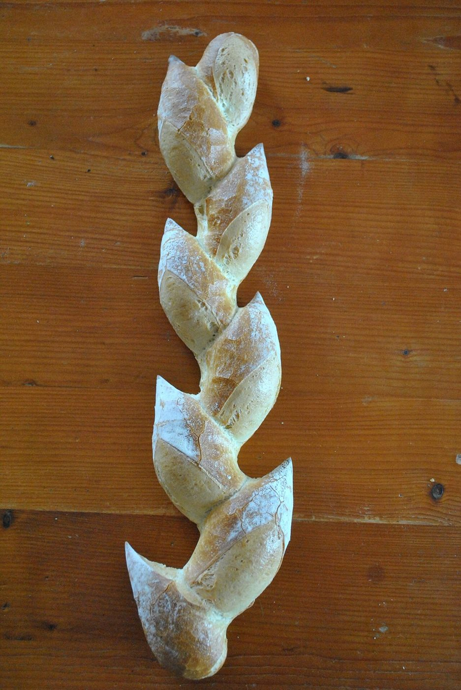

制作側の連想
ゲーム機の部位を、配置図にしてみる
このサイトは、棚に置いた家庭用ゲーム機の本体を図にしたつもりで作りました。六つの部位に番号をふり、上の図と並べています。制作側の連想で、お店の理念・由来とは無関係です。特定の製品の仕様を示すものでもありません。
凡例
六つの部位
- 1電源ボタン本体の正面にある、オンとオフを切り替えるための丸いボタン。
- 2ディスクスロットディスクを差し込む、横長の細い挿入口。
- 3USBポート周辺機器の端子をつなぐための差し込み口。
- 4通気口本体の中の熱を逃がすために、細く並べて開けたすき間。
- 5ステータスランプ電源が入っているかどうかを、色の点灯で知らせる小さな光。
- 6スタンド本体を縦に置いたとき、倒れないように支える台座。



ギャラリー(イメージ)
パンとコーヒー豆の写真


写真はパンとコーヒー豆のイメージです。お店のものではなく、お店で提供している商品を示すものでもありません。